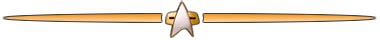
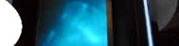
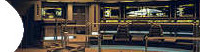
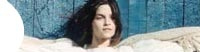

|


|
Conheça a
história da produção de Voyager relatada em
detalhes desde a concepo, em 1994, at
a concluso da série, em 2001, organizada por captulos! Em
breve!

Os cenários
internos, Parte II  Os cenários
internos, Parte I  Seven of Nine:
resistir intil A corrida pela
capitã de Voyager Quase
uma
semana
com
Nicole
Janeway  |